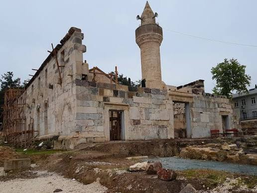
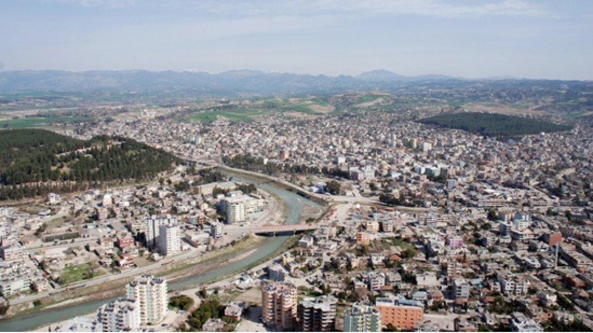
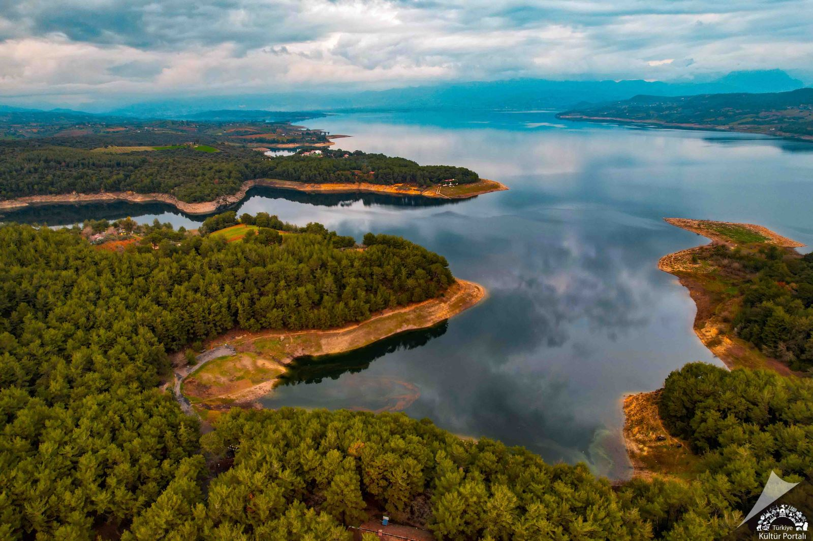
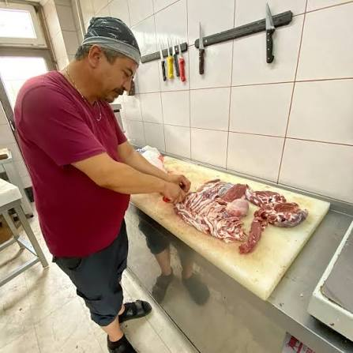
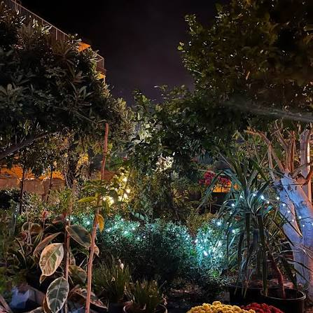
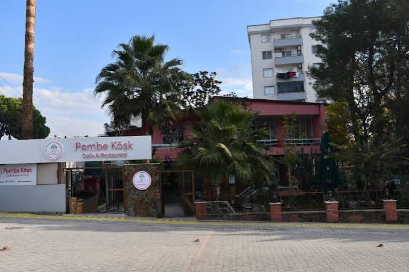

TARİH
Ala Camii
Kadirli'nin en dikkat çekici tarihi yapılarından biri.
Tarihi yerler, yöresel lezzetler, kafeler, restoranlar ve şehir yaşamı tek bir yerde.

Kadirli, Osmaniye'nin önemli ilçelerinden biridir. İlçe; tarihi yapıları, Çukurova kültürü, yöresel yemekleri ve çevresindeki doğal alanlarla öne çıkar.
Güzelim Kadirli projesinin amacı, ziyaretçilerin ve şehirde yaşayanların ihtiyaç duyduğu yerel bilgileri tek bir platformda toplamaktır.
Tarihten yeme içmeye kadar şehirde aradığın şeylere hızlıca ulaş.
Tarihi yapılar, müzeler ve doğal güzellikler.
Kebap, lahmacun, kahvaltı, restoranlar ve kafeler.
Kadirli'deki hizmetleri ve işletmeleri keşfet.
Bölgenin önemli tarihi ve kültürel noktalarından bazıları.

Kadirli'nin en dikkat çekici tarihi yapılarından biri.
Çarşı, kafeler, restoranlar ve yerel işletmelerle Kadirli'nin günlük yaşamını keşfet.

Kadirli çevresindeki önemli tarihi ve doğal alanlardan biri.
Bir mekana tıklayarak adres, telefon ve detayları görüntüleyebilirsin.

Kaburga, kebap ve geleneksel et yemekleri.

Bahçe ortamında kahvaltı ve yemek.

Kahvaltı, yemek ve kafe seçenekleri.
Yerel lokanta.
Lahmacun ve yöresel yemekler.
Kadirli'de kebap.
Kadirli'deki işletmeleri kategori kategori bul.
Sağlık kuruluşları
Eczane ve nöbetçi eczane bilgileri
Acil durum ve güvenlik
Otobüs ve ulaşım bilgileri
Şehir merkezini ve çevresini incele.
İşletmeni Güzelim Kadirli'ye eklemek veya yanlış bilgiyi bildirmek için bize ulaş.